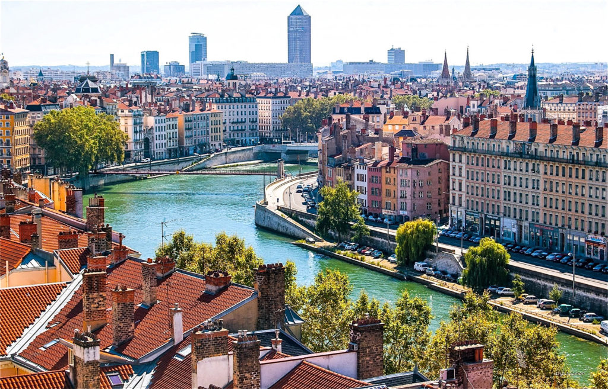

Історичне місто Франції

Ліон — велике французьке місто, розташоване біля злиття річок Рона та Сона. Місто має багату історію, цікаву архітектуру та відому гастрономічну культуру.
Чому я обрав Ліон
Ліон зацікавив мене поєднанням історичної атмосфери та сучасного міського життя. Особливо подобаються старовинні квартали, набережні та французька культура.
Цікаві факти
- Ліон є одним із найбільших міст Франції.
- Історична частина міста входить до списку Світової спадщини ЮНЕСКО.
- Ліон вважається одним із важливих центрів французької гастрономії.
Визначні місця
- Старий Ліон
- Базиліка Нотр-Дам-де-Фурв'єр
- Площа Белькур
- Парк Тет-д'Ор
Моя оцінка
9/10 — за архітектуру, історію та французьку атмосферу.